A rider in Coimbatore who wants to reach the airport has three ride-hailing apps to compare, and the cheapest quote is not always a ride that will actually arrive. A driver on the same platforms sees an offer for a few seconds and has to judge, without arithmetic, whether the fare covers fuel, commission and the unpaid drive to the pickup point. RIVA (Ride Intelligence and Virtual Assistance) is a conversational assistant built to help with both sides of that exchange.
RIVA runs as a Model Context Protocol (MCP) server. A large language model client, such as Claude or ChatGPT, talks to the user and calls RIVA's 22 tools; each tool returns structured JSON and an interactive widget that renders inside the chat. Behind those tools sits a multi-agent system. One rider agent, three provider agents (Uber, Ola and Rapido) and a fleet of driver agents negotiate every ride using two nested FIPA Contract Net protocols, exchanging timestamped messages on a discrete-event bus. A search layer plans routes over a 32-junction model of Coimbatore's road network with A*, and orders multi-stop trips by A* over a visited-set state space. A driver advisor plans a shift as a finite-horizon Markov decision process, and the rider agent learns its utility weights from the rides the rider books.
The system is advisory and simulated. Uber and Ola quotes come from fare models, Rapido can be scraped live through Apify but falls back to the same simulation, and no booking, payment or emergency dispatch is real. Geocoding and routing use Geoapify when an API key is configured; without one, every component runs offline and deterministically, which is how all the results in this report were produced.
The report follows the course template. Section 2 gives the PEAS description of each agent, Section 3 classifies the agents and their environment, Section 4 describes the architecture and algorithms, Section 5 the implementation, and Section 6 the test suite and the benchmark results.
RIVA contains five kinds of agent. Table 1 gives their PEAS descriptions. Every performance measure in the table is computed by the code, either inside the tool responses or by the benchmark script (npm run evaluate), and Section 6 reports the measured values.
| Agent | Performance measure | Environment | Actuators | Sensors |
|---|---|---|---|---|
| Rider agent (one per request) | Match rate (requests ending with an assigned driver); utility U of the ride obtained (lower is better, defined below); zero violations of hard constraints; fraction of soft constraints kept; top-1 agreement between its first choice and the ride the rider actually books. | Provider agents, their quotes, the rider's stored preferences, the resolved route. | CFP to all providers; ACCEPT_PROPOSAL (award) and REJECT_PROPOSAL messages; update of its own utility weights. | PROPOSE / REFUSE bids, INFORM (driver assigned), FAILURE (provider could not dispatch); booking confirmations. |
| Provider agent (Uber, Ola, Rapido) | Fulfilment rate of awarded contracts; simulated seconds from award to assignment; incentive paid per fulfilled trip. | The rider agent, its own fleet of driver agents, route and time of day. | PROPOSE / REFUSE to the rider; CFP trip offers, ACCEPT / REJECT to drivers; incentive re-offers; INFORM or FAILURE to the rider. | Rider CFP and award messages; driver PROPOSE / REFUSE replies; its pricing model or live scraper; driver positions. |
| Driver agent (8 per provider per scene) | Net earning per trip = fare + incentive − fuel − commission; net earning per hour; never accepting a loss-making trip. | Its provider, the trip offer, fuel prices, commission rate, demand at the destination. | PROPOSE (accept) or REFUSE with a stated reason. | Trip offers (fare, incentive, pickup point, trip length, destination, hour); its own position, vehicle, fuel type and reservation wage. |
| Route planner (search agent) | Route cost equal to the optimum for the chosen objective (minutes or km); nodes expanded; frontier size. | Coimbatore road graph (32 nodes, 48 road segments) with hour-dependent congestion. | Returns a path, distance, duration and polyline; reorders multi-stop itineraries. | Start and goal junctions (snapped from geocoded positions), objective, departure hour. |
| Shift planner (driver advisor) | Expected net earnings over the shift horizon, compared with greedy and stay-put policies. | Nine demand zones, hourly demand curves, zone-to-zone travel times from A*. | Recommended action now (wait or reposition) and an hour-by-hour plan. | Driver's location, start time, shift length, vehicle, fuel type and platform. |
The rider agent scores a ride option o from the pool P of available bids with a weighted sum of three normalised, lower-is-better features:
U(o) = wf · fare(o)/maxP fare + we · eta(o)/maxP eta + wr · (1 − rating(o)/5), wf + we + wr = 1
The weights start at 0.45, 0.35 and 0.20 and are then learned (Section 4.4). For the driver agent, fuel cost is charged on pickup distance plus trip distance, because the unpaid drive to the rider burns fuel too, and commission is 25%, 22% and 15% of the fare for Uber, Ola and Rapido respectively.
| Raw input | Sensor (code path) | Percept produced |
|---|---|---|
| User utterance, e.g. “I need to reach the airport by 8 AM tomorrow” | LLM client → MCP tools/call arguments, validated by Zod schemas | Typed request: origin, destination, arriveBy, preferences |
| Place names (“Amrita University”) | MapsService.resolveLocation: Geoapify geocoder, else road-graph names, else local gazetteer | Coordinates with a live / estimated flag |
| Clock and calendar | time.util.ts parsers; isWeekend() | Hour of day, day offset, weekday or weekend |
| Provider prices | Provider adapters (fare model; Apify actor for Rapido) | Normalised RideOption list |
| Other agents' messages | MessageBus delivery to Agent.receive() | ACL message: performative, sender, content, timestamp |
| Zone demand | DemandService hourly curves per zone category | Demand score 0–100, expected wait, return probability |
| Decision | Actuator | Effect visible to the user |
|---|---|---|
| Ranked rides, relaxed constraints, Pareto flags | find_rides result + ride-comparison widget | Ranked card list with route, A* statistics and a constraint note |
| Award, re-award, driver assignment | bus.send() of ACCEPT_PROPOSAL / INFORM | agent-trace widget; driver name and ETA in booking_simulation |
| Accept or decline a trip offer | PROPOSE / REFUSE message with reason | Line in the negotiation trace |
| Route and stop order | RouteInfo (path, polyline, search stats); MultiStopPlan.optimization | search-comparison and ride-map widgets |
| Shift policy | plan_driver_shift result | shift-plan widget: first move, itinerary, baseline comparison |
| Learned preference weights | RankingService.learnFromChoice | Changed ranking on the next search; weights shown in the ranking banner |
The agents span four of the standard categories in Russell and Norvig [1]. Table 4 lists them, with the specific mechanism that puts each agent in its category.
| Agent | Category | Why |
|---|---|---|
| Rider agent | Utility-based, learning | Chooses the bid that minimises U subject to constraints. Its learning element is a ranking-perceptron update of (wf, we, wr) from each confirmed booking; the critic is the rider's revealed choice. |
| Provider agent | Model-based reflex, with a fixed escalation plan | Keeps internal state (quoted options, current award, round number, replies received). Its rules are condition–action: no available vehicle → REFUSE; all drivers declined → re-offer with a 15% incentive; still declined → FAILURE. |
| Driver agent | Utility-based | Computes net and hourly earnings for each offer, combines them with destination demand and pickup distance into an ACCEPT / CONSIDER / REJECT score, and accepts a CONSIDER only above a private reservation wage (₹160–420 per hour, different per driver). |
| Route planner | Goal-based (search) | Has an explicit goal state and finds a minimum-cost action sequence with A* under an admissible heuristic. |
| Shift planner | Utility-based, planning under uncertainty | Maximises expected cumulative reward over a horizon by solving an MDP with backward induction. |
The LLM client is a fifth participant. It is outside RIVA's code, so it is not modelled in Table 4, but it acts as the interface agent: it perceives the user's text, selects tools and arguments, and phrases the results. Tool descriptions and the start_conversation prompt are the only levers RIVA has on its behaviour.
The task environment differs between the marketplace as a whole and the narrower problems that individual agents solve, so Table 5 classifies them separately.
| Property | Ride marketplace | Route planning | Driver shift |
|---|---|---|---|
| Observability | Partially observable: the rider cannot see driver availability or reservation wages; a provider cannot know a driver's answer before it arrives. | Fully observable: the whole graph and its edge costs for the hour are known. | Partially observable: future trip requests and destinations are known only as distributions. |
| Agents | Multi-agent, mixed: providers compete for the rider's award; drivers of a provider compete for the trip; rider and provider cooperate once the contract is awarded. | Single agent. | Single agent (other drivers are folded into the demand model). |
| Determinism | Stochastic from each agent's viewpoint (other agents' choices, availability); the simulation itself is seeded and reproducible. | Deterministic. | Stochastic: transitions follow trip-destination probabilities. |
| Episodic / sequential | Sequential within a request (awards, rounds); requests are independent episodes, except that learned weights carry over. | Episodic per query. | Sequential: where the driver ends one hour sets the options for the next. |
| Static / dynamic | Dynamic: simulated time passes while drivers decide (2–9 s each). | Static during a query; costs change with the departure hour between queries. | Dynamic: demand changes hour by hour. |
| Discrete / continuous | Continuous positions, fares and times; discrete message types. | Discrete graph, continuous edge costs. | Discretised: 9 zones × 1-hour steps. |
| Known / unknown | Known rules (fare formulas, protocol), unknown other-agent parameters. | Known. | Known model (the MDP is given, not learned). |
Figure 1 shows the layers. The LLM client is the only part the user talks to. NitroStack, an MCP framework with NestJS-style modules and dependency injection, hosts six feature modules that expose tools. The tools call services, and the services use a framework-free core in src/ai (search, road network, tour ordering, MDP solver) and src/agents (message bus and the three agent classes). Keeping the core free of framework imports is what lets the test suite and the benchmark drive the same code as the tools, through a hand-wired harness, without starting a server.
Every external integration is lazy and has a fallback. No network call happens at start-up; a missing Geoapify key routes through the road graph, a failed Apify scrape falls back to Rapido's fare model, and a single provider failing does not stop the other two from bidding.
Problem formulation. States are the 32 junctions of a hand-built Coimbatore road graph (Amrita at Ettimadai, Madukkarai, Ukkadam, Town Hall, Gandhipuram, Peelamedu, the airport, Neelambur and others). Actions traverse one of 48 undirected road segments, each tagged as highway, arterial or local. The initial state is the junction nearest the pickup point, within a 2.5 km snapping radius, and the goal test is equality with the junction nearest the drop point. The step cost depends on the objective:
length(e) = haversine(a, b) × windingclass time(e, h) = length(e) / vclass × (1 + (c(h) − 1) · sclass)
The free-flow speeds v are 55, 32 and 24 km/h for highway, arterial and local roads. The city congestion factor c(h) is 1.6 in the 8–10 AM and 6–9 PM peaks, 1.25 in the daytime, 1.1 in the late evening and 1.0 overnight. The sensitivity s is 0.35, 1.0 and 0.8 by class, so rush hour slows city roads far more than the bypass. The graph includes the L&T bypass that skirts the city from Madukkarai to Neelambur, which gives the search problem a real trade-off: from Amrita to the airport the city route is shorter (31.9 km) but slower (85 min at 9 AM), while the bypass is longer (41.4 km) and faster (59 min).
Algorithms. A single best-first graph search in search.ts serves all four strategies, which differ only in the priority that orders the frontier: depth for BFS, path cost g for UCS, the heuristic h for greedy best-first, and g + h for A*. The frontier is a binary min-heap with insertion-order tie-breaking, so BFS stays first-in-first-out. The goal test runs when a node is popped, which is what keeps UCS and A* optimal. Instead of a decrease-key operation, duplicate frontier entries are allowed and skipped on pop when stale, and UCS and A* re-open a state whenever a cheaper path to it appears.
Heuristic. For the time objective h(n) is the straight-line distance to the goal divided by 55 km/h, the fastest free-flow speed in the graph; for distance it is the straight-line distance itself. Every edge is at least as long as the straight line between its ends, and no road is faster than 55 km/h after congestion, so h never overestimates, and the same argument gives consistency. The test suite checks both properties exhaustively for every (node, goal) pair at four hours of the day rather than relying on the argument (Section 6).
Time-dependent replanning. The travel concierge plans backwards from an arrival deadline. Congestion depends on the departure hour, and the departure hour depends on the travel time, so the concierge iterates: plan with A* at the arrival hour, compute the departure time, re-plan at that hour, and stop when the departure hour no longer changes (at most three iterations).
Multi-stop ordering. When a rider lists stops and does not care about their order, the start and final destination stay fixed and the intermediate stops form an open travelling-salesman path. tour.ts solves it exactly with the same A* engine over states (current stop, set of visited stops), using the heuristic
h(s) = max over unvisited u of [ cost(s, u) + cost(u, end) ]
which is admissible whenever costs satisfy the triangle inequality, as shortest-path travel times do: any completion must pass through u and then reach the end. Pairwise costs come from the offline road-graph estimate, so ordering never costs n² live API calls; only the legs of the chosen order are routed and priced.
Every ride is negotiated with two nested instances of the Contract Net protocol [3], using FIPA ACL performatives [4]. The sequence below is the outer net; the inner net starts when a provider receives an award.
Messages travel on a discrete-event bus. Each message is stamped with the sender's simulated clock plus a latency (0.1–0.5 s between software agents, 2–9 s for a driver to decide) and delivered in timestamp order from a priority queue, so a driver who decides in 3 s answers before one who takes 8 s. Agents never call each other's methods; they only post messages. All randomness, from fleet positions to latencies, comes from a seeded generator, so a given seed reproduces the same trace exactly. A confirmed booking uses the same market with maxAwards = 1, so the rider is never silently moved to a ride they did not confirm, and the assigned driver is one who actually accepted.
Driver shift MDP. The shift planner models the next H hours (default 4) as a finite-horizon MDP [5]. A state is a demand zone (nine zones: airport, railway station, Ukkadam bus terminus, Gandhipuram, RS Puram, Peelamedu IT corridor, Saravanampatti, Singanallur and the Ettimadai college area) at a given hour. The actions are to wait in the zone, or to reposition to one of the other eight. In an hour of waiting, the driver completes
trips = usable minutes / (wait(score) + 5 min pickup + expected ride minutes), wait(score) = 3 + 42 · (1 − score/100)²
trips, with the convex waiting curve shared with DemandService. Trip destinations follow a gravity model, weight ∝ (destination demand + 15) · e−km/6, so most trips are short and busy zones attract more of them. The destination of the hour's last trip is where the driver starts the next hour. Repositioning costs fuel and loses its travel minutes, taken from A* on the road graph at that hour. Backward induction applies the Bellman optimality equation from the last hour to the first and is exact for a finite horizon. The planner then evaluates two fixed policies on the same model for comparison: greedy (best expected reward this hour only) and stay-put (always wait).
Constraint satisfaction. Rider preferences form a small constraint problem over the candidate rides. The female-driver preference is a hard constraint, since it concerns safety, and is never relaxed; if no ride satisfies it the result is empty and the response says why. Luggage, budget and vehicle exclusions are soft constraints in that priority order. When no ride satisfies all of them, the lowest-priority one is dropped and the filter retried, and the response names what was relaxed. The previous version discarded every preference when nothing matched, without saying so.
Preference learning. Each confirmed booking is a revealed preference: the rider chose option c over the options the current weights ranked above it. For that set A, the rider agent applies a ranking-perceptron update
w ← w − η · meana∈A ( f(c) − f(a) ), η = 0.6
where f is the feature vector in U. Each weight is clipped at 0.05 and the vector renormalised to sum to 1. A rider who keeps paying more for a faster pickup therefore moves weight from fare to pickup ETA. Every ranked option is also tagged as Pareto-optimal or dominated (another available option is no more expensive, no slower to arrive, rated no lower, and strictly better on one of the three).
Hardware. Any machine that runs Node.js; no GPU. The full test suite runs in about 5 s and the full benchmark in about 29 s on the development laptop (Windows 11, Node.js 24.20).
Software. Node.js 20 or later and npm. API keys are optional: GEOAPIFY_API_KEY enables live geocoding, routing and static maps; APIFY_API_TOKEN enables live Rapido fares.
| Package / service | Role | Reason for the choice |
|---|---|---|
| Model Context Protocol | Agent ↔ LLM interface | Open protocol supported by several LLM clients, so the same server works in Claude and ChatGPT; tool results can carry UI widgets. |
@nitrostack/core 1.0.14 | MCP server framework | Decorator-based tools, modules and dependency injection; built-in widget binding (@Widget); stdio and HTTP transports. |
zod 3 | Tool input schemas | Validates every tool argument at the trust boundary and doubles as the schema the LLM reads. |
Next.js 14, React 18, @nitrostack/widgets | Widget front-ends | Each widget compiles to a self-contained HTML page the chat client renders inline; the SDK supplies tool output, theme and state. |
| TypeScript 5 (strict) | Language | Shared domain types between tools, agents and widgets. |
| Geoapify API (optional) | Geocoding, routing, static maps | OpenStreetMap-based, good coverage of informal Indian landmark names, free tier. |
| Apify (optional) | Live Rapido fares | Hosted scraper actors with a synchronous run endpoint; failures fall back to the simulation. |
node:test | Test runner | Built into Node.js; adds no dependency. |
We chose to write the search, MDP and negotiation code ourselves rather than use a graph or agent library. Each piece is short (the search engine is under 200 lines, comments included), the course asks for the algorithms to be understood rather than imported, and owning the code made it possible to expose search statistics such as nodes expanded and the explored set to the widgets.
Every tool input is a Zod object. A ride search, for example, is { origin: string, destination: string, preferences?: { femaleDriverOnly?, budgetLimit?, luggageRequired?, excludeVehicleTypes? }, rankingMode?: 'cheapest' | 'fastest' | 'instant_pickup' | 'best_value' }. Free-text times (“8 AM tomorrow”, “21:00”) are parsed into an hour and a day offset. Inside the system, a route is a RouteInfo (distance, duration, source, polyline, the junctions passed and the search statistics), a quote is a normalised RideOption with the same fields for every provider, and an agent message is an AclMessage with id, timestamp, sender, receiver, performative, conversation id, content and a one-line summary.
RIVA uses no training dataset. Its data is a set of hand-specified models, listed here because every result depends on them:
road-network.ts). It is an abstraction of the arterial network, not an OpenStreetMap extract.All of these are illustrative values chosen to be plausible. They have not been fitted to observed data, and the results in Section 6 describe the behaviour of the system under these models, not the real Coimbatore market.
| Path | Contents |
|---|---|
src/ai/ | Search engine and heap, road network and congestion model, tour ordering, MDP solver. |
src/agents/ | ACL message types and the discrete-event bus; rider, provider and driver agents. |
src/services/ | Maps, ride search with constraint satisfaction, ranking with learning and Pareto tags, forecasting, nearby drivers, session state. |
src/providers/ | Uber and Ola fare-model adapters, Rapido hybrid adapter (Apify with simulation fallback). |
src/modules/rides, journey, driver, session | The original rider, journey and driver tools, now using the new core. |
src/modules/marketplace, routing | New tools: simulate_ride_marketplace, compare_search_strategies; plan_driver_shift lives in the driver module. |
src/widgets/app/* | 16 widgets, including the new agent-trace, search-comparison and shift-plan. |
scripts/, tests/ | Offline harness, narrated demo, benchmark; four test files with 42 tests. |
Users interact in natural language through an MCP client. Each tool result is rendered by its widget: ride comparison cards with Pareto and constraint notes, a search-comparison view that draws the road graph with the nodes each strategy expanded, a negotiation trace with colour-coded performatives, a shift plan with its baseline comparison, and the earlier booking, travel-plan, demand and safety widgets. Figures 2–5 show four of them rendering real tool output. For presentations without an LLM client, npm run demo prints seven narrated scenarios in the terminal (Figures 9 and 13).
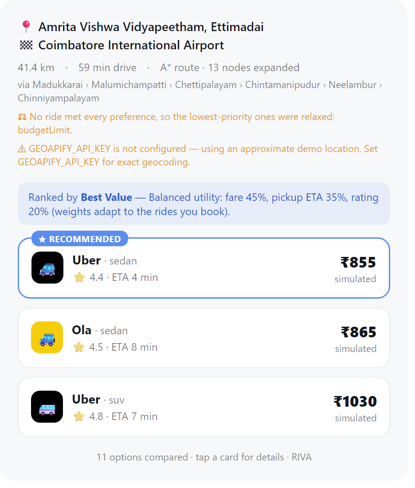
find_rides, Amrita → airport, 9 AM, luggage and a ₹350 budget. No ride meets both, so the budget is relaxed and the response says so; the route is A* over the road graph (13 nodes expanded).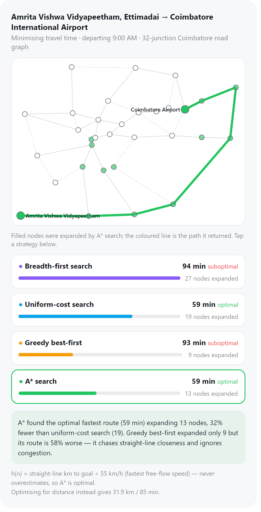
compare_search_strategies for the same trip. A* returns the bypass route (59 min) after expanding 13 nodes; UCS needs 19; greedy best-first and BFS return routes over 90 min.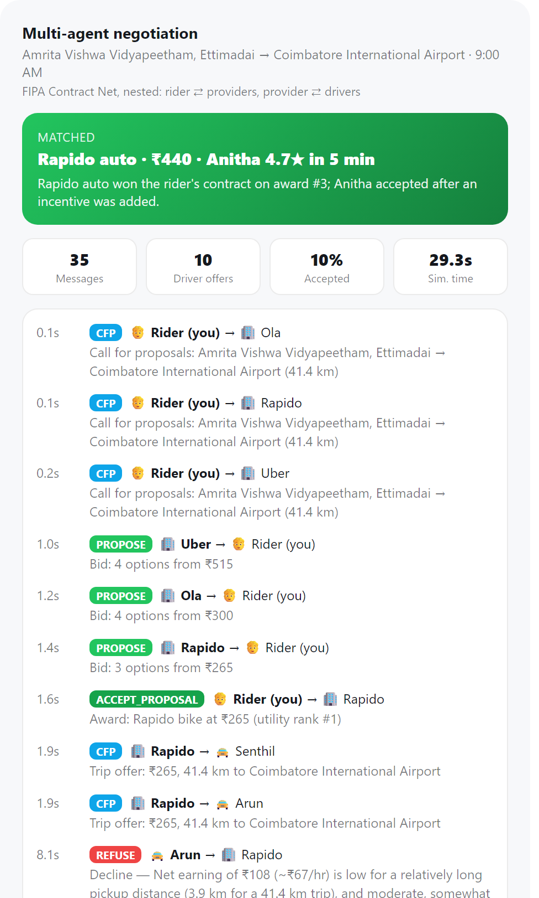
simulate_ride_marketplace (first half of the trace). Both nearby Rapido bike drivers decline the ₹265 airport trip, then decline again with a ₹40 incentive; the rider re-awards, and on the third award a Rapido auto driver accepts.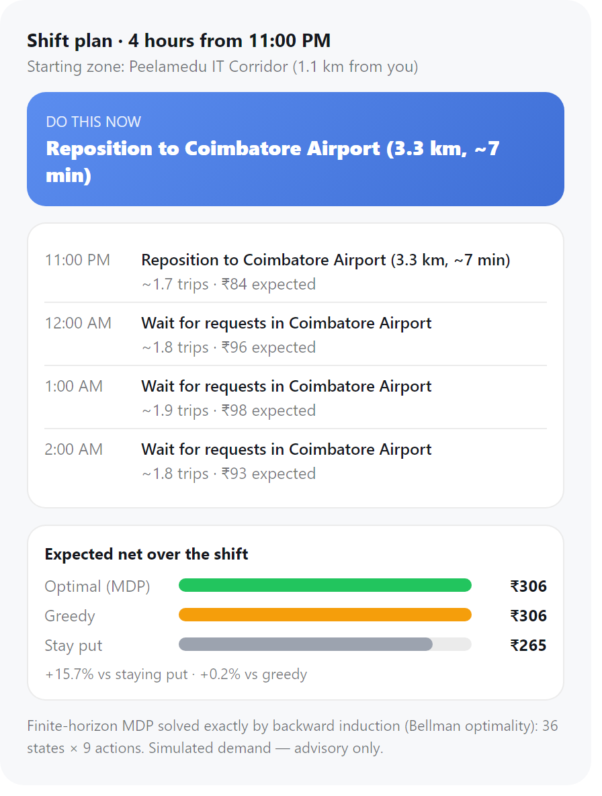
plan_driver_shift for an auto driver at Tidel Park at 11 PM. The MDP moves the driver to the airport; expected net ₹306 against ₹265 for staying put.Testing was done at five levels. Unit tests check single functions against hand-computed answers. Property tests check a claim over every case in a finite space instead of a few examples. Protocol tests run the marketplace on 18 scenes (six trips × three seeds) and check Contract Net invariants on every message log. Integration tests drive the full offline pipeline: geocoding, routing, provider quotes, constraints, ranking and multi-stop planning. At the system level we started the built server (node dist/index.js), completed the MCP handshake over stdio, listed the tools (22) and called simulate_ride_marketplace, compare_search_strategies and plan_driver_shift, each of which returned its widget reference; this system check was run by hand and is not part of npm test. Finally, npm run evaluate measures each agent against its performance measure over generated workloads.
| ID | Level | What is checked |
|---|---|---|
| T1 | Property | A* path cost equals UCS path cost for all 992 ordered node pairs at 4 hours, for both objectives. |
| T2 | Property | A* never expands more nodes than UCS on any pair, and expands fewer in total. |
| T3 | Property | Heuristic is admissible (h ≤ true cost) and consistent (h(n) ≤ c(n, n′) + h(n′)) for every node, goal and hour. |
| T4 | Property | Graph is connected; edges are positive and no shorter than the straight line; rush hour never shortens a trip. |
| T5 | Property | Greedy and BFS always find a path and are never cheaper than the optimum; BFS uses the fewest segments. |
| T6 | Property | A* stop ordering equals brute-force enumeration on 60 random instances of 3–7 stops; start and end stay fixed; each stop appears once. |
| T7 | Protocol | Every CFP gets exactly one PROPOSE or REFUSE; message timestamps never decrease. |
| T8 | Protocol | A matched ride goes to a driver who proposed, from the winning provider, with the vehicle the rider chose; the rider is informed once; every losing bidder receives REJECT_PROPOSAL. |
| T9 | Protocol | A fixed seed reproduces the identical message log; failed awards are followed by re-awards; a confirmed booking never switches rides. |
| T10 | Unit | Bus delivers by timestamp, not send order; rejects unknown recipients; heap pops in priority then FIFO order. |
| T11 | Unit | Soft constraints relax lowest-priority first; the hard safety constraint is never relaxed; Pareto flags on a hand-built pool. |
| T12 | Unit | Learning moves weight from fare to pickup ETA for a speed-seeking rider, keeps weights summing to 1, and does not move when the choice was already ranked first. |
| T13 | Unit | Backward induction finds the known optimum (20) of a two-state MDP; fixed policies are bounded by it. |
| T14 | Property | Optimal shift value ≥ greedy and ≥ stay-put from all 9 zones at 6 start hours. |
| T15 | Unit | Net = gross − fuel − commission; fuel covers the pickup leg; a loss-making trip is rejected; time phrases parse correctly. |
| T16 | Integration | Coimbatore searches route via A* on the graph; off-graph places (Mumbai) fall back to the straight-line estimate; multi-stop optimisation never lengthens a trip. |
Table 9 summarises 3,968 route queries per objective (992 ordered pairs × departures at 3 AM, 9 AM, 2 PM and 7 PM). UCS and A* were optimal on every query, which T1 also enforces. The heuristic cut the mean number of expanded nodes from 16.0 to 11.3 for travel time (29% fewer) and to 6.6 for distance (59% fewer). The gap between objectives fits the heuristic's form: for distance, straight-line km is a tight bound, whereas dividing by the 55 km/h highway speed makes the time heuristic loose on congested city roads. Greedy best-first expanded only 4.2 nodes, but its route was optimal on 62% of time queries and was up to 216% slower than the best route. BFS ignores costs altogether and was optimal on about half the queries. At 9 AM the fastest route differs from the shortest on 19% of node pairs, which is why the objective is a parameter rather than fixed.
| Strategy | Optimal (%) | Nodes expanded | Nodes generated | Max frontier | Mean excess cost (%) | Worst excess (%) |
|---|---|---|---|---|---|---|
| Objective: travel time | ||||||
| BFS | 52.7 | 16.0 | 21.4 | 7.4 | 21.0 | 301.5 |
| UCS | 100 | 16.0 | 24.2 | 9.1 | 0 | 0 |
| Greedy | 62.4 | 4.2 | 10.8 | 6.7 | 10.6 | 215.9 |
| A* | 100 | 11.3 | 19.5 | 8.5 | 0 | 0 |
| Objective: distance | ||||||
| BFS | 54.2 | 16.0 | 21.4 | 7.4 | 17.4 | 279.0 |
| UCS | 100 | 16.0 | 23.6 | 8.8 | 0 | 0 |
| Greedy | 67.0 | 4.2 | 10.8 | 6.7 | 5.5 | 82.4 |
| A* | 100 | 6.6 | 14.1 | 7.6 | 0 | 0 |
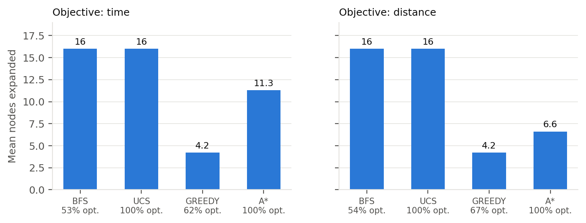
On a 32-node graph the absolute savings are a few node expansions per query, and the run time of any strategy is well under a millisecond. The result that matters at this scale is the optimality column; the expansion counts indicate how the gap would grow on a larger graph, which we did not test.
We generated 300 random itineraries of 4–8 stops from the graph's junctions, with travel-time costs at 2 PM, and compared the order as given with the A*-optimised order (Table 10). The share of itineraries the optimiser improves rises from 42% at four stops to 100% at eight, where it saves 35% of travel time on average. Because the given orders are random, these savings are an upper bound on what a rider who already orders stops sensibly would gain. The heuristic's pruning grows with problem size: at eight stops A* expanded 39 states, UCS 186, and brute force would evaluate 720 complete orders (Figure 7).
| Stops | Improved (%) | Mean min saved | Mean time saved (%) | A* states | UCS states | Brute-force orders |
|---|---|---|---|---|---|---|
| 4 | 41.7 | 9.3 | 8.5 | 3.3 | 4.8 | 2 |
| 5 | 80.0 | 23.8 | 17.3 | 5.4 | 12.4 | 6 |
| 6 | 96.7 | 44.8 | 26.0 | 8.6 | 31.3 | 24 |
| 7 | 95.0 | 57.1 | 28.5 | 18.2 | 76.4 | 120 |
| 8 | 100 | 82.2 | 35.4 | 38.9 | 186.4 | 720 |
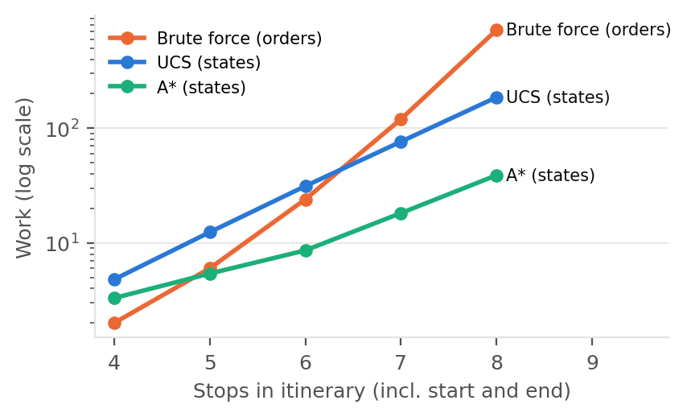
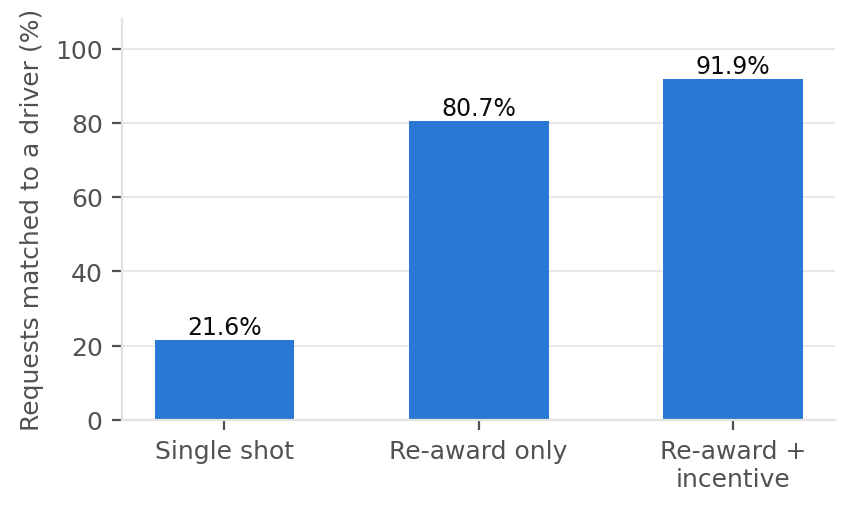
The marketplace benchmark ran every ordered pair of 12 landmarks (132 trips) at 9 AM, 2 PM, 7 PM and 11 PM, giving 528 requests, under three protocol variants (Table 11). With the full protocol, 91.9% of requests ended with an assigned driver. Removing the incentive round lowered this to 80.7%, and awarding only the best bid once, with no incentive, lowered it to 21.6%.
| Variant | Matched (%) | Matched on 1st award (%) | Messages | Driver offers | Driver accept (%) | Incentive used (%) | Sim. seconds | Utility rank of ride |
|---|---|---|---|---|---|---|---|---|
| Re-award + incentive | 91.9 | 30.5 | 27.0 | 6.8 | 29.5 | 24.3 | 23.9 | 1.89 |
| Re-award only | 80.7 | 21.6 | 23.4 | 4.8 | 32.8 | 0 | 17.6 | 2.04 |
| Single award | 21.6 | 21.6 | 15.4 | 2.2 | 14.9 | 0 | 8.7 | 1.00 |
The traces show why the single award fails so often. The rider's top-ranked bid is usually the cheapest two-wheeler or auto, and for longer trips that fare gives drivers a low hourly rate: in the Amrita–airport trace, the ₹265 bike trip nets the nearer driver ₹117 for about 90 minutes of work. Drivers decline such offers, or no driver with that vehicle type is within 4 km. Re-awarding lets the rider fall back to its second- or third-ranked bid. The cost is a mean utility rank of 1.89 instead of 1, together with more messages (27.0 against 15.4) and more simulated time (23.9 s against 8.7 s). Match rates also varied by hour, from 86.4% at 2 PM to 98.5% at 7 PM, which is consistent with the demand model: destination demand is higher at 7 PM, and the drivers' acceptance score rewards destination demand. These numbers characterise the simulated market. Driver reservation wages, fleet density and the 4 km radius are parameters we chose, and different values would move every column.
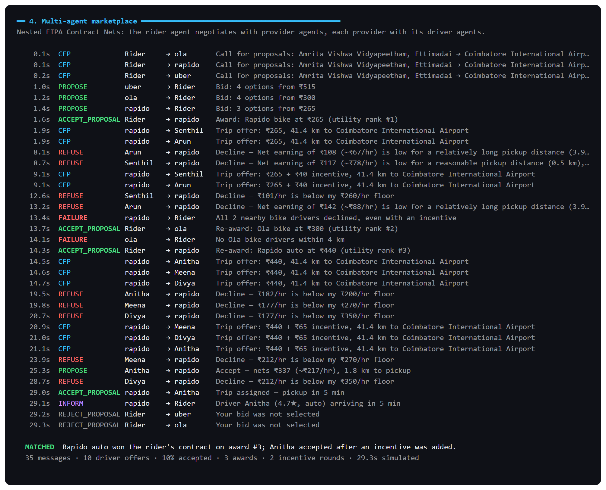
npm run demo, scenario 4: the full 35-message negotiation for Amrita → airport at 9 AM, with simulated timestamps.The shift planner was solved from every zone at every start hour (216 start states) for an auto on CNG and a sedan on diesel (Table 12, Figure 10). The optimal policy beat staying put by 3.6% on average for the auto and by up to 18.9%, with the largest gains in the late evening and before dawn, when some zones go quiet. It beat the greedy policy by only 0.18% on average (at most 6.1%), and for the sedan the two were indistinguishable. Under this model, then, repositioning helps, but looking ahead beyond the current hour adds little. A likely reason is the transition model: each hour's trips move the driver to a demand-weighted random destination, so a position chosen now has little effect two hours later. A model in which positions persist, for example with half-hour steps or longer airport queues, could show a larger gap. We did not test such variants.
| Vehicle | Optimal | Greedy | Stay put | Gain vs stay (mean / max %) | Gain vs greedy (mean / max %) | Reposition first (%) |
|---|---|---|---|---|---|---|
| Auto, CNG | 353 | 352 | 342 | 3.6 / 18.9 | 0.18 / 6.1 | 25.5 |
| Sedan, diesel | 571 | 571 | 557 | 2.7 / 15.6 | 0.00 / 0.2 | 19.0 |
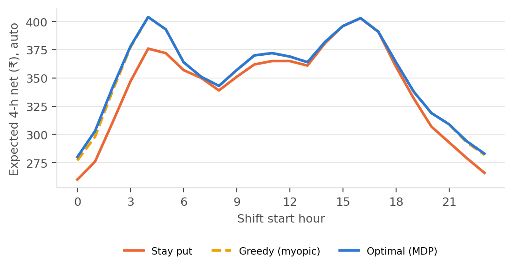
To test the learner without real users we simulated 40 riders, each with hidden weights drawn at random, who each booked 15 rides from searches across 10 landmarks. Each rider always booked the option that minimised their hidden utility. Table 13 compares how often the agent's first-ranked option matched that choice, for learned weights against the fixed 45/35/20 weights. Over bookings 11–15, agreement was 91.5% with learning and 82% without. Over bookings 1–5 the two were close, 81% against 79.5%, as expected before the learner has seen many choices. The per-booking curve in Figure 11 is noisy because each point averages 40 riders on different trips, and the comparison rests on a single simulated population.
| Bookings 1–5 | Bookings 11–15 | |
|---|---|---|
| Learned weights | 81.0 | 91.5 |
| Fixed weights | 79.5 | 82.0 |
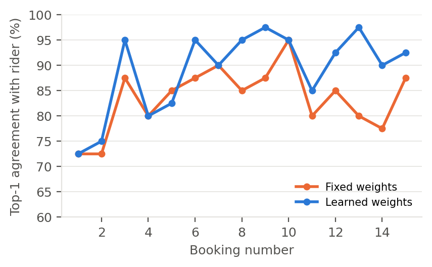
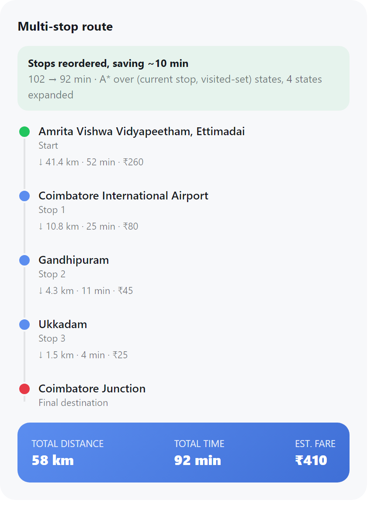
multi_stop_trip_planner with optimizeOrder: four errands reordered, saving about 10 minutes at 2 PM.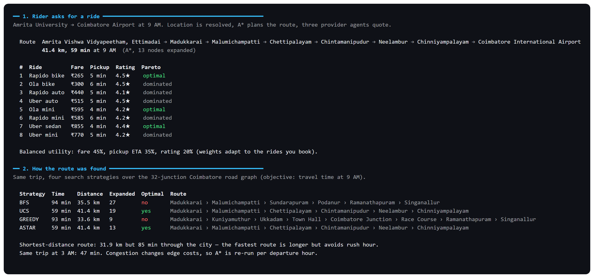
npm run demo, scenarios 1–2: the ride comparison with Pareto tags, and the four search strategies on the same trip.RIVA now routes with A* over a time-dependent road model, negotiates each ride between rider, provider and driver agents through nested Contract Nets, plans driver shifts with an MDP, treats rider preferences as hard and soft constraints, and learns rider utility weights from bookings. Each of these is reachable from a conversation through MCP tools with their own widgets, and each is checked by tests that cover whole spaces where the space is finite: all node pairs, all zones and hours, all stop orders up to seven stops.
The benchmark supports three conclusions about this system. A* matched UCS on every query while expanding 29–59% fewer nodes. Negotiation with re-awards and incentives raised the matched share of requests from 21.6% to 91.9%, because the rider's cheapest bid is often a trip no nearby driver will take. And MDP planning improved on staying put but barely on greedy repositioning, a result we attribute, tentatively, to the way trips scatter the driver each hour.
The limitations follow from the design. Prices, demand, driver behaviour and latencies are simulated, so the numbers describe the model rather than the Coimbatore market, and the model parameters were chosen, not fitted. The road graph uses approximate coordinates and 32 junctions, and the advantage of A* on a full city network was not measured. Rider preferences, learned weights and the user mode are process-wide in-memory state with no user accounts. The LLM client's tool selection was not evaluated quantitatively. Bookings, payments and SOS alerts are simulations and say so in every response.
The natural next steps are to replace the hand-built graph with an OpenStreetMap extract to test search at realistic scale, to fit the demand curves and reservation wages to trip data if any becomes available, and to keep per-user state so that learned preferences belong to a rider rather than to the server process.
Reproducing the results: npm install, then npm test (42 tests), npm run demo, and npm run evaluate, which rewrites docs/results/evaluation.json. All runs are offline and seeded.